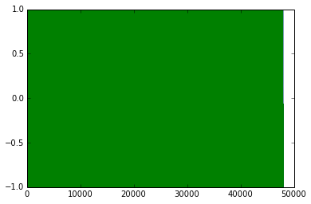

File "/usr/lib/python2.7/dist-packages/spyderlib/widgets/externalshell/sitecustomize.py", line 580, in runfile
execfile(filename, namespace)
File "/home/bai/Downloads/verhulst/run_cochlear_model2.py", line 28, in <module>
t=np.arange(0, tmax, 1/fs)
ZeroDivisionError: float division by zero
In [57]: runfile('/home/bai/Downloads/verhulst/run_cochlear_model2.py', wdir='/home/bai/Downloads/verhulst')
UMD has deleted: cochlear_model
Traceback (most recent call last):
File "<ipython-input-57-bbb36dc3ef5a>", line 1, in <module>
runfile('/home/bai/Downloads/verhulst/run_cochlear_model2.py', wdir='/home/bai/Downloads/verhulst')
File "/usr/lib/python2.7/dist-packages/spyderlib/widgets/externalshell/sitecustomize.py", line 580, in runfile
execfile(filename, namespace)
File "/home/bai/Downloads/verhulst/run_cochlear_model2.py", line 28, in <module>
t=np.arange(0, tmax, 1/fs)
ZeroDivisionError: float division by zero
In [58]: runfile('/home/bai/Downloads/verhulst/run_cochlear_model2.py', wdir='/home/bai/Downloads/verhulst')
UMD has deleted: cochlear_model
Traceback (most recent call last):
File "<ipython-input-58-bbb36dc3ef5a>", line 1, in <module>
runfile('/home/bai/Downloads/verhulst/run_cochlear_model2.py', wdir='/home/bai/Downloads/verhulst')
File "/usr/lib/python2.7/dist-packages/spyderlib/widgets/externalshell/sitecustomize.py", line 580, in runfile
execfile(filename, namespace)
File "/home/bai/Downloads/verhulst/run_cochlear_model2.py", line 28, in <module>
t=np.arange(0, tmax, 1/fs)
ZeroDivisionError: float division by zero
In [59]: runfile('/home/bai/Downloads/verhulst/run_cochlear_model2.py', wdir='/home/bai/Downloads/verhulst')
UMD has deleted: cochlear_model
Traceback (most recent call last):
File "<ipython-input-59-bbb36dc3ef5a>", line 1, in <module>
runfile('/home/bai/Downloads/verhulst/run_cochlear_model2.py', wdir='/home/bai/Downloads/verhulst')
File "/usr/lib/python2.7/dist-packages/spyderlib/widgets/externalshell/sitecustomize.py", line 580, in runfile
execfile(filename, namespace)
File "/home/bai/Downloads/verhulst/run_cochlear_model2.py", line 28, in <module>
t=np.arange(0, tmax, 1/fs)
ZeroDivisionError: float division by zero
In [60]: runfile('/home/bai/Downloads/verhulst/run_cochlear_model2.py', wdir='/home/bai/Downloads/verhulst')
UMD has deleted: cochlear_model
Traceback (most recent call last):
File "<ipython-input-60-bbb36dc3ef5a>", line 1, in <module>
runfile('/home/bai/Downloads/verhulst/run_cochlear_model2.py', wdir='/home/bai/Downloads/verhulst')
File "/usr/lib/python2.7/dist-packages/spyderlib/widgets/externalshell/sitecustomize.py", line 580, in runfile
execfile(filename, namespace)
File "/home/bai/Downloads/verhulst/run_cochlear_model2.py", line 28, in <module>
t=np.arange(0, tmax, 1/fs)
ZeroDivisionError: float division by zero
In [61]: fs
Out[61]: 48000
In [62]: 1/fs
Out[62]: 0
In [63]: from __future__ import division
In [64]: 1/fs
Out[64]: 2.0833333333333333e-05
In [65]: %varexp --plot insig

In [66]: spl=np.array((60,60))
In [67]: spl
Out[67]: array([60, 60])
In [68]: (60, 60)
Out[68]: (60, 60)
In [69]: norm_factor=p0*10.**(spl/20.)
In [70]: norm_factor
Out[70]: array([ 0.02, 0.02])
In [71]: insig * norm_factor
Out[71]:
array([[ 0. , 0. ],
[ 0.00130806, 0.00130806],
[ 0.00261052, 0.00261052],
...,
[-0.00390181, -0.00390181],
[-0.00261052, -0.00261052],
[-0.00130806, -0.00130806]])
In [72]: cochlear_model.cochlea_model()
Out[72]: <cochlear_model.cochlea_model instance at 0x7fd3227fd560>
In [73]: a = cochlear_model.cochlea_model()
In [74]: a[3]
Traceback (most recent call last):
File "<ipython-input-74-94e7916e7615>", line 1, in <module>
a[3]
AttributeError: cochlea_model instance has no attribute '__getitem__'
In [75]: a
Out[75]: <cochlear_model.cochlea_model instance at 0x7fd32281f5a8>
In [76]: a.init_model
Out[76]: <bound method cochlea_model.init_model of <cochlear_model.cochlea_model instance at 0x7fd32281f5a8>>
In [77]: runfile('/home/bai/Downloads/verhulst/run_cochlear_model2.py', wdir='/home/bai/Downloads/verhulst')
UMD has deleted: cochlear_model
all
Traceback (most recent call last):
File "<ipython-input-77-bbb36dc3ef5a>", line 1, in <module>
runfile('/home/bai/Downloads/verhulst/run_cochlear_model2.py', wdir='/home/bai/Downloads/verhulst')
File "/usr/lib/python2.7/dist-packages/spyderlib/widgets/externalshell/sitecustomize.py", line 580, in runfile
execfile(filename, namespace)
File "/home/bai/Downloads/verhulst/run_cochlear_model2.py", line 82, in <module>
i] for i in range(channels)]
IndexError: invalid index to scalar variable.
In [78]: channels
Out[78]: 2400
In [79]: insig.shape
Out[79]: (2400, 2)
In [80]: runfile('/home/bai/Downloads/verhulst/run_cochlear_model2.py', wdir='/home/bai/Downloads/verhulst')
UMD has deleted: cochlear_model
all
Traceback (most recent call last):
File "<ipython-input-80-bbb36dc3ef5a>", line 1, in <module>
runfile('/home/bai/Downloads/verhulst/run_cochlear_model2.py', wdir='/home/bai/Downloads/verhulst')
File "/usr/lib/python2.7/dist-packages/spyderlib/widgets/externalshell/sitecustomize.py", line 580, in runfile
execfile(filename, namespace)
File "/home/bai/Downloads/verhulst/run_cochlear_model2.py", line 58, in <module>
(channels,idx)=(insig.shape[1])
TypeError: 'int' object is not iterable
In [81]: insig.shape
Out[81]: (2400, 2)
In [82]: insig.shape.T
Traceback (most recent call last):
File "<ipython-input-82-e20d6e8b66cb>", line 1, in <module>
insig.shape.T
AttributeError: 'tuple' object has no attribute 'T'
In [83]: insig.T.shape
Out[83]: (2, 2400)
In [84]: runfile('/home/bai/Downloads/verhulst/run_cochlear_model2.py', wdir='/home/bai/Downloads/verhulst')
UMD has deleted: cochlear_model
all
Traceback (most recent call last):
File "<ipython-input-84-bbb36dc3ef5a>", line 1, in <module>
runfile('/home/bai/Downloads/verhulst/run_cochlear_model2.py', wdir='/home/bai/Downloads/verhulst')
File "/usr/lib/python2.7/dist-packages/spyderlib/widgets/externalshell/sitecustomize.py", line 580, in runfile
execfile(filename, namespace)
File "/home/bai/Downloads/verhulst/run_cochlear_model2.py", line 79, in <module>
sig = insig * norm_factor
ValueError: operands could not be broadcast together with shapes (2,2400) (2,)
In [85]: runfile('/home/bai/Downloads/verhulst/run_cochlear_model2.py', wdir='/home/bai/Downloads/verhulst')
UMD has deleted: cochlear_model
all
Traceback (most recent call last):
File "<ipython-input-85-bbb36dc3ef5a>", line 1, in <module>
runfile('/home/bai/Downloads/verhulst/run_cochlear_model2.py', wdir='/home/bai/Downloads/verhulst')
File "/usr/lib/python2.7/dist-packages/spyderlib/widgets/externalshell/sitecustomize.py", line 580, in runfile
execfile(filename, namespace)
File "/home/bai/Downloads/verhulst/run_cochlear_model2.py", line 79, in <module>
sig = insig * norm_factor.T
ValueError: operands could not be broadcast together with shapes (2,2400) (2,)
In [86]: runfile('/home/bai/Downloads/verhulst/run_cochlear_model2.py', wdir='/home/bai/Downloads/verhulst')
UMD has deleted: cochlear_model
all
Traceback (most recent call last):
File "<ipython-input-86-bbb36dc3ef5a>", line 1, in <module>
runfile('/home/bai/Downloads/verhulst/run_cochlear_model2.py', wdir='/home/bai/Downloads/verhulst')
File "/usr/lib/python2.7/dist-packages/spyderlib/widgets/externalshell/sitecustomize.py", line 580, in runfile
execfile(filename, namespace)
File "/home/bai/Downloads/verhulst/run_cochlear_model2.py", line 84, in <module>
i] for i in range(channels)]
TypeError: only length-1 arrays can be converted to Python scalars
In [87]: channels
Out[87]:
array([ 0. , 0.06540313, 0.13052619, ..., -0.19509032,
-0.13052619, -0.06540313])
In [88]: runfile('/home/bai/Downloads/verhulst/run_cochlear_model2.py', wdir='/home/bai/Downloads/verhulst')
UMD has deleted: cochlear_model
all
Traceback (most recent call last):
File "<ipython-input-88-bbb36dc3ef5a>", line 1, in <module>
runfile('/home/bai/Downloads/verhulst/run_cochlear_model2.py', wdir='/home/bai/Downloads/verhulst')
File "/usr/lib/python2.7/dist-packages/spyderlib/widgets/externalshell/sitecustomize.py", line 580, in runfile
execfile(filename, namespace)
File "/home/bai/Downloads/verhulst/run_cochlear_model2.py", line 84, in <module>
i] for i in range(channels)]
IndexError: invalid index to scalar variable.
In [89]: channels
Out[89]: 2
In [90]: range(channels)
Out[90]: [0, 1]
In [91]: sig[0]
Out[91]:
array([ 0. , 0.00130806, 0.00261052, ..., -0.00390181,
-0.00261052, -0.00130806])
In [92]: irr_0n
Traceback (most recent call last):
File "<ipython-input-92-4b343e677f03>", line 1, in <module>
irr_0n
NameError: name 'irr_0n' is not defined
In [93]: irr_on
Out[93]: array([0, 1])
In [94]: irr_on[0]
Out[94]: 0
In [95]: runfile('/home/bai/Downloads/verhulst/run_cochlear_model2.py', wdir='/home/bai/Downloads/verhulst')
UMD has deleted: cochlear_model
all
In [96]: runfile('/home/bai/Downloads/verhulst/run_cochlear_model2.py', wdir='/home/bai/Downloads/verhulst')
UMD has deleted: cochlear_model
all
In [97]: runfile('/home/bai/Downloads/verhulst/run_cochlear_model2.py', wdir='/home/bai/Downloads/verhulst')
UMD has deleted: cochlear_model
all
Traceback (most recent call last):
File "<ipython-input-97-bbb36dc3ef5a>", line 1, in <module>
runfile('/home/bai/Downloads/verhulst/run_cochlear_model2.py', wdir='/home/bai/Downloads/verhulst')
File "/usr/lib/python2.7/dist-packages/spyderlib/widgets/externalshell/sitecustomize.py", line 580, in runfile
execfile(filename, namespace)
File "/home/bai/Downloads/verhulst/run_cochlear_model2.py", line 107, in <module>
p.map(solve_one_cochlea,cochlear_list)
File "/usr/lib/python2.7/multiprocessing/pool.py", line 251, in map
return self.map_async(func, iterable, chunksize).get()
File "/usr/lib/python2.7/multiprocessing/pool.py", line 558, in get
raise self._value
ValueError: object of too small depth for desired array
In [98]: cochlea_list
Traceback (most recent call last):
File "<ipython-input-98-d7f7bde3d6f2>", line 1, in <module>
cochlea_list
NameError: name 'cochlea_list' is not defined
In [99]: cochlear_list
Out[99]:
[[<cochlear_model.cochlea_model instance at 0x7fd322863128>,
array([ 0. , 0.00130806, 0.00261052, ..., -0.00390181,
-0.00261052, -0.00130806]),
0,
0],
[<cochlear_model.cochlea_model instance at 0x7fd32285d290>,
array([ 0. , 0.00130806, 0.00261052, ..., -0.00390181,
-0.00261052, -0.00130806]),
1,
1]]
In [100]: cochlear_list[0]
Out[100]:
[<cochlear_model.cochlea_model instance at 0x7fd322863128>,
array([ 0. , 0.00130806, 0.00261052, ..., -0.00390181,
-0.00261052, -0.00130806]),
0,
0]
In [101]: solve_one_cochlea(cochlear_list[0])
Traceback (most recent call last):
File "<ipython-input-101-2e3014e5fcd9>", line 1, in <module>
solve_one_cochlea(cochlear_list[0])
File "/home/bai/Downloads/verhulst/run_cochlear_model2.py", line 89, in solve_one_cochlea
coch.init_model(model[1],Oversampling*Fs,sectionsNo,probe_points,Zweig_irregularities=model[2],sheraPo=sheraPo,subject=subjectNo) #model needs to be init here because if not pool.map crash
File "cochlear_model.py", line 154, in init_model
np.random.RandomState(self.seed)
File "mtrand.pyx", line 574, in mtrand.RandomState.__init__ (numpy/random/mtrand/mtrand.c:5678)
File "mtrand.pyx", line 608, in mtrand.RandomState.seed (numpy/random/mtrand/mtrand.c:5956)
ValueError: object of too small depth for desired array
In [102]: runfile('/home/bai/Downloads/verhulst/run_cochlear_model2.py', wdir='/home/bai/Downloads/verhulst')
UMD has deleted: cochlear_model
all
In [103]: runfile('/home/bai/Downloads/verhulst/run_cochlear_model2.py', wdir='/home/bai/Downloads/verhulst')
UMD has deleted: cochlear_model
all
In [104]: ls
cochlear_model.py _init_.py out/ run_cochlear_model.py
cochlear_model.pyc make.bat README.txt tridiag.so*
cochlea_utils.c makefile run_cochlear_model2.py
In [105]: cd out
/home/bai/Downloads/verhulst/out
In [106]: ls
E1.np E2.np F1.np F2.np init.m v1.np v2.np y1.np y2.np
In [107]: res = solve_one_cochlea(cochlear_list[0])
Traceback (most recent call last):
File "<ipython-input-107-ffd7587ae9b2>", line 1, in <module>
res = solve_one_cochlea(cochlear_list[0])
File "/home/bai/Downloads/verhulst/run_cochlear_model2.py", line 91, in solve_one_cochlea
f=open("out/v"+str(i+1)+".np",'wb')
IOError: [Errno 2] No such file or directory: 'out/v1.np'
In [108]: res
Traceback (most recent call last):
File "<ipython-input-108-41a0db25bac4>", line 1, in <module>
res
NameError: name 'res' is not defined
In [109]: runfile('/home/bai/Downloads/verhulst/run_cochlear_model2.py', wdir='/home/bai/Downloads/verhulst')
UMD has deleted: cochlear_model
all
In [110]: res = solve_one_cochlea(cochlear_list[0])
In [111]: res
Out[111]:
array([[ 5.56217792e-15, 5.42389291e-15, 5.28894373e-15, ...,
7.57167582e-27, 5.12574462e-27, 2.60417177e-27],
[ 4.98586978e-14, 4.88346044e-14, 4.78281904e-14, ...,
1.00968473e-25, 6.83518847e-26, 3.47266518e-26],
[ 1.54586404e-13, 1.52547891e-13, 1.50508943e-13, ...,
5.71818338e-25, 3.87099467e-25, 1.96668489e-25],
...,
[ -1.01953017e-12, -1.03321630e-12, -1.04709241e-12, ...,
-1.51901835e-09, -9.86964291e-10, -4.78604107e-10],
[ 0.00000000e+00, 0.00000000e+00, 0.00000000e+00, ...,
0.00000000e+00, 0.00000000e+00, 0.00000000e+00],
[ 0.00000000e+00, 0.00000000e+00, 0.00000000e+00, ...,
0.00000000e+00, 0.00000000e+00, 0.00000000e+00]])
In [112]: res.shape
Out[112]: (2400, 1000)
In [113]: pcolor
Traceback (most recent call last):
File "<ipython-input-113-418b20e1d7ad>", line 1, in <module>
pcolor
NameError: name 'pcolor' is not defined
In [114]: %pylab
Using matplotlib backend: TkAgg
Populating the interactive namespace from numpy and matplotlib
WARNING: pylab import has clobbered these variables: ['random']
`%matplotlib` prevents importing * from pylab and numpy
In [115]: pcolor(res)
Traceback (most recent call last):
File "<ipython-input-115-89a63aa518c3>", line 1, in <module>
pcolor(res)
File "/usr/lib/pymodules/python2.7/matplotlib/pyplot.py", line 2928, in pcolor
ret = ax.pcolor(*args, **kwargs)
File "/usr/lib/pymodules/python2.7/matplotlib/axes.py", line 7606, in pcolor
collection = mcoll.PolyCollection(verts, **kwargs)
File "/usr/lib/pymodules/python2.7/matplotlib/collections.py", line 744, in __init__
self.set_verts(verts, closed)
File "/usr/lib/pymodules/python2.7/matplotlib/collections.py", line 761, in set_verts
codes[:] = mpath.Path.LINETO
KeyboardInterrupt
In [116]: for i in res:
...: plot(i)
...:
In [117]: for i in res.T:
...: plot(i)
...:
In [118]: for i in res.T[::10]:
...: plot(i)
...:
In [119]: pcolor(res.T[::10])
Out[119]: <matplotlib.collections.PolyCollection at 0x7fd2ec49bd10>
In [120]: plot(res[:,-1])
Out[120]: [<matplotlib.lines.Line2D at 0x7fd2ebe97210>]
In [121]: plot(res[-1,:])
Out[121]: [<matplotlib.lines.Line2D at 0x7fd2ec5a8110>]
In [122]: plot(res[-5,:])
Out[122]: [<matplotlib.lines.Line2D at 0x7fd2ec4fdd50>]
In [123]: runfile('/home/bai/Downloads/verhulst/run_cochlear_model2.py', wdir='/home/bai/Downloads/verhulst')
UMD has deleted: cochlear_model
all
In [124]: res = solve_one_cochlea(cochlear_list[0])
In [125]: plot(res[-5,:])
Out[125]: [<matplotlib.lines.Line2D at 0x7fd2eec1cf10>]
In [126]: